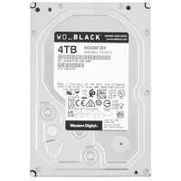

Технические характеристики
| Интерфейс | SATA III (6 Гбит/с) |
| Ёмкость | 4 ТБ |
| Форм-фактор | 3.5" |
| Скорость шпинделя | 7200 RPM |
| Кэш | 256 МБ |
| Назначение | Производительные настольные системы, игровые ПК |
| Гарантия | 2–5 лет (в зависимости от модели/региональной политики) |